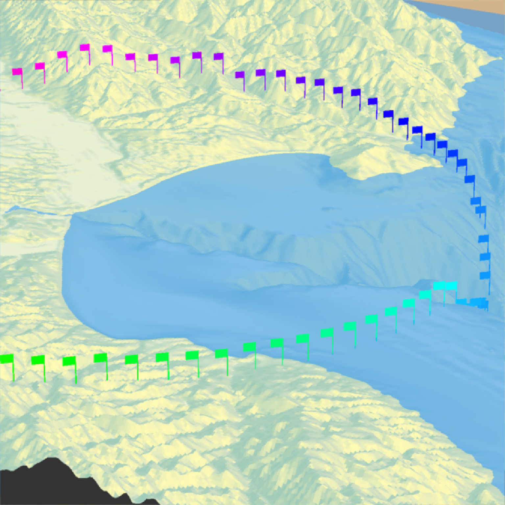
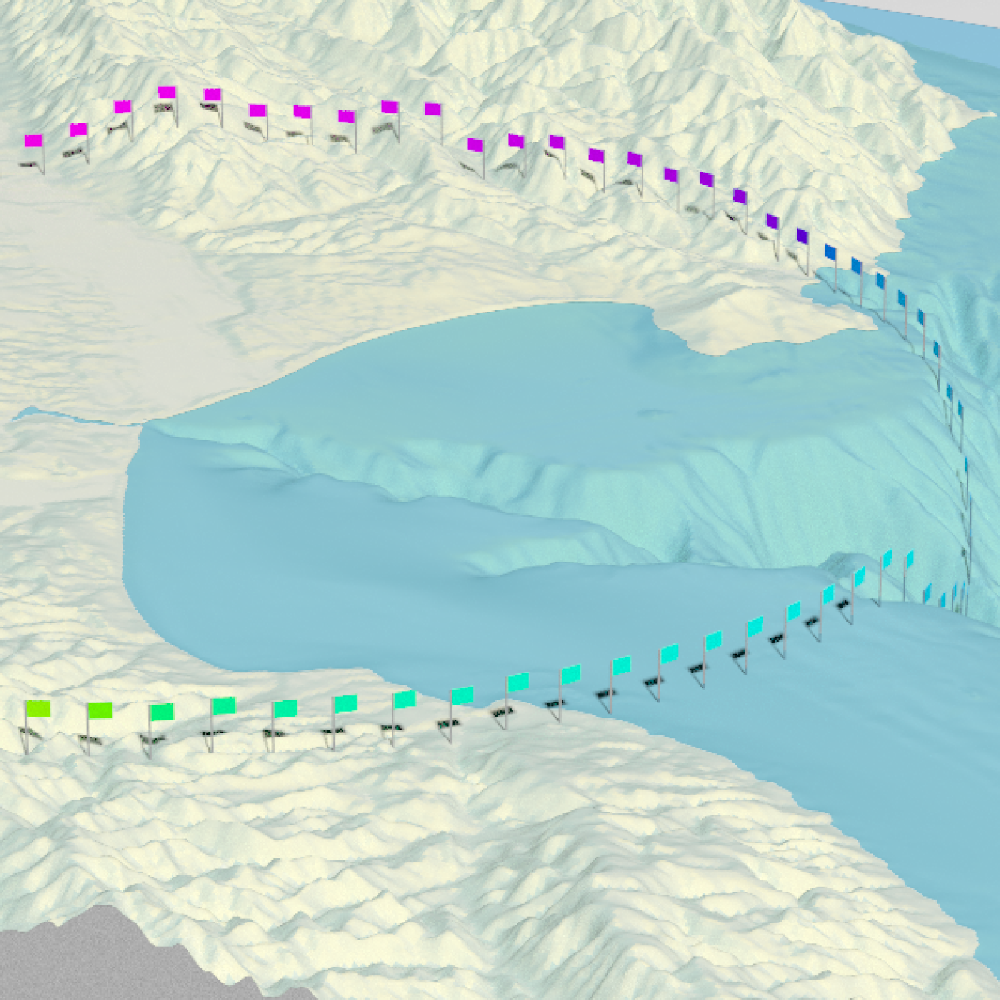

Adds 3D OBJ model to the current scene, using latitude/longitude or coordinates in the reference system defined by the extent object. If no altitude is provided, the OBJ will be elevated a constant offset above the heightmap. If the OBJ goes off the edge, the OBJ will be filtered out.
If no latitudes or longitudes are passed in, the OBJ will be plotted in the coordinate system set by the user-specified `extent` argument as-is. Use this alongside `save_multipolygonz_to_obj()` to plot 3D polygons imported from geospatial sources in the proper location (but for ease of use, use `render_multipolygonz()` to plot this data directly).
render_obj(
filename,
extent = NULL,
lat = NULL,
long = NULL,
altitude = NULL,
xyz = NULL,
zscale = 1,
heightmap = NULL,
load_material = FALSE,
load_normals = TRUE,
color = "grey50",
offset = 0,
obj_zscale = FALSE,
swap_yz = NULL,
angle = c(0, 0, 0),
scale = c(1, 1, 1),
clear_previous = FALSE,
baseshape = "rectangle",
lit = FALSE,
light_altitude = c(45, 30),
light_direction = c(315, 135),
light_intensity = 0.3,
light_relative = FALSE,
rgl_tag = "",
...
)Filename for the OBJ file.
Either an object representing the spatial extent of the scene (either from the `raster`, `terra`, `sf`, or `sp` packages), a length-4 numeric vector specifying `c("xmin", "xmax","ymin","ymax")`, or the spatial object (from the previously aforementioned packages) which will be automatically converted to an extent object.
Vector of latitudes (or other coordinate in the same coordinate reference system as extent).
Vector of longitudes (or other coordinate in the same coordinate reference system as extent).
Default `NULL`. Elevation of each point, in units of the elevation matrix (scaled by `zscale`). If left `NULL`, this will be just the elevation value at ths surface, offset by `offset`. If a single value, the OBJ will be rendered at that altitude.
Default `NULL`, ignored. A 3 column numeric matrix, with each row specifying the x/y/z coordinates of the OBJ model(s). Overrides lat/long/altitude and ignores extent to plot the OBJ in raw rgl coordinates.
Default `1`. The ratio between the x and y spacing (which are assumed to be equal) and the z axis in the original heightmap.
Default `NULL`. Automatically extracted from the rgl window--only use if auto-extraction of matrix extent isn't working. A two-dimensional matrix, where each entry in the matrix is the elevation at that point. All points are assumed to be evenly spaced.
Default `TRUE`. Whether to load the accompanying MTL file to load materials for the 3D model.
Default `TRUE`. Whether to load normals for the 3D model.
Default `black`. Color of the 3D model, if `load_material = FALSE`.
Default `5`. Offset of the model from the surface, if `altitude = NULL`.
Default `FALSE`. Whether to scale the size of the OBJ by zscale to have it match the size of the map. If zscale is very big, this will make the model very small.
Default `NULL`, defaults to `FALSE` unless plotting raw coordinates (no lat or long passed). Whether to swap and Y and Z axes. (Y axis is vertical in rayshader coordinates, but data is often provided with Z being vertical).
Default `c(0,0,0)`. Angle of rotation around the x, y, and z axes. If this is a matrix or list, each row (or list entry) specifies the rotation of the nth model specified (number of rows/length of list must equal the length of `lat`/`long`).
Default `c(1,1,1)`. Amount to scale the 3D model in the x, y, and z axes. If this is a matrix or list, each row (or list entry) specifies the scale of the nth model specified (number of rows/length of list must equal the length of `lat`/`long`).
Default `FALSE`. If `TRUE`, it will clear all existing points.
Default `rectangle`. Shape of the base. Options are `c("rectangle","circle","hex")`.
Default `TRUE`. Whether to light the polygons.
Default `c(45, 60)`. Degree(s) from the horizon from which to light the polygons.
Default `c(45, 60)`. Degree(s) from north from which to light the polygons.
Default `0.3`. Intensity of the specular highlight on the polygons.
Default `FALSE`. Whether the light direction should be taken relative to the camera, or absolute.
Default `""`. Tag to add to the rgl scene id, will be prefixed by `"obj"`
Additional arguments to pass to `rgl::triangles3d()`.
if(run_documentation()) {
#Render the 3D map
moss_landing_coord = c(36.806807, -121.793332)
montereybay %>%
sphere_shade() %>%
plot_3d(montereybay,zscale=50,water=TRUE,
shadowcolor="#40310a", background = "tan",
theta=210, phi=22, zoom=0.20, fov=55)
t = seq(0,2*pi,length.out=100)
circle_coords_lat = moss_landing_coord[1] + 0.3 * sin(t)
circle_coords_long = moss_landing_coord[2] + 0.3 * cos(t)
#Create a rainbow spectrum of flags
render_obj(flag_full_obj(), extent = attr(montereybay,"extent"), heightmap = montereybay,
lat = unlist(circle_coords_lat), long = unlist(circle_coords_long),
scale=c(2,2,2), angle=c(0,45,0),
zscale=50, color=rainbow(100), smooth = FALSE, clear_previous = TRUE)
render_snapshot()
}

if(run_documentation()) {
#Rotate the flag to follow the circle
render_obj(flag_full_obj(), extent = attr(montereybay,"extent"), heightmap = montereybay,
lat = unlist(circle_coords_lat), long = unlist(circle_coords_long),
scale=c(2,2,2),
angle=matrix(c(rep(0,100), seq(0,-360,length.out=101)[-1],rep(0,100)),ncol=3),
zscale=50, color=rainbow(100), smooth = FALSE, clear_previous = TRUE)
render_snapshot()
}
if(run_documentation()) {
#Style the pole with a different color
render_obj(flag_pole_obj(), extent = attr(montereybay,"extent"), heightmap = montereybay,
lat = unlist(circle_coords_lat), long = unlist(circle_coords_long),
scale=c(2,2,2),
angle=matrix(c(rep(0,100), seq(0,-360,length.out=101)[-1],rep(0,100)),ncol=3),
zscale=50, color="grey20", smooth = FALSE, clear_previous = TRUE)
render_obj(flag_banner_obj(), extent = attr(montereybay,"extent"), heightmap = montereybay,
lat = unlist(circle_coords_lat), long = unlist(circle_coords_long),
scale=c(2,2,2),
angle=matrix(c(rep(0,100), seq(0,-360,length.out=101)[-1],rep(0,100)),ncol=3),
zscale=50, color=rainbow(100), smooth = FALSE)
#And all of these work with `render_highquality()`
render_highquality(sample_method="sobol_blue",clamp_value=10)
}
